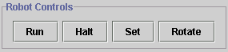

|
|
Robot Controls |
|---|
In order to execute your control code, you need to be familiar with
the robot controls on the interface. The row of buttons on the top
right-hand side of the interface enable a simple set of controls that
allow you to place the robot in the world, set its orientation, run the
current controller and halt the current controller.
NOTE: when a controller is executing, you cannot edit the
current world, re-set the robot or adjust the robot's orientation.
Robot Control Buttons

| Run |
- |
selecting this button starts the current controller (i.e. the
Robot.class file in the main directory). |
|
| Halt |
- |
selecting this button terminates the run of your controller.
It is highly recommended that you halt any runs before
exiting the program. |
|
| Set |
- |
selecting this button toggles it on. Once selected, move the
mouse cursor into the world panel and click the mouse to place the
robot. If you decide you want to change the robot's location after
you place it, just click on another location. When you are done
placing the robot, click on the Set button to de-select it. |
|
| Rotate |
- |
once you have placed the robot in the world panel using the Set
button, click this button to adjust its orientation. Each time you
click, the robot will be turned 45 degrees in a clock-wise
direction. |